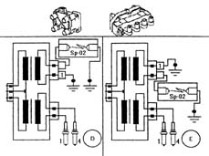

5510CC Check on the operation of the ignition coils
- Path
- Test > 55 ELECTRICAL EQUIPMENT > 5510 ENGINE IGNITION > 5510C coil, ecu, sensors > 5510CC Check on the operation of the ignition coils
- Kind
- test / check procedure
- Applies to
- engines: 1.6 16v; all production periods; only with equipment: GPOWER
- Interactive page
- https://sloeber94.github.io/elrnDB-fMltpl/en/#/2892404
Applies to: engines: 1.6 16v; all production periods; only with equipment: GPOWER
The appropriate equipment is required for this test (tool 1.806.369.000 spark gap Kit).
Make sure that the ignition key is in the OFF position.
Disconnect the two spark plug cables from coil 2 from the HT output.
Insert the spark gap (SP-02) between one of the two HT outputs and earth.
Insert the adaptor cable with the number 1 between the other HT output and earth.
Make sure that the rubber protective boots for the cables are correctly fitted.
Disconnect the fuse B28 to cut off the petrol pump supply.
Start the engine and check that there is a spark between the tips of the spark gap (case 'D' in the figure).
Repeat the test after reversing the connections (case 'E' in the figure).
Also carry out the test on coil 1.
The coils can be tested by activating the 'Active Diagnosis' for the coils using the Examiner and listening to the clicking of the H.T. sparks operated by the diagnostic equipment.
